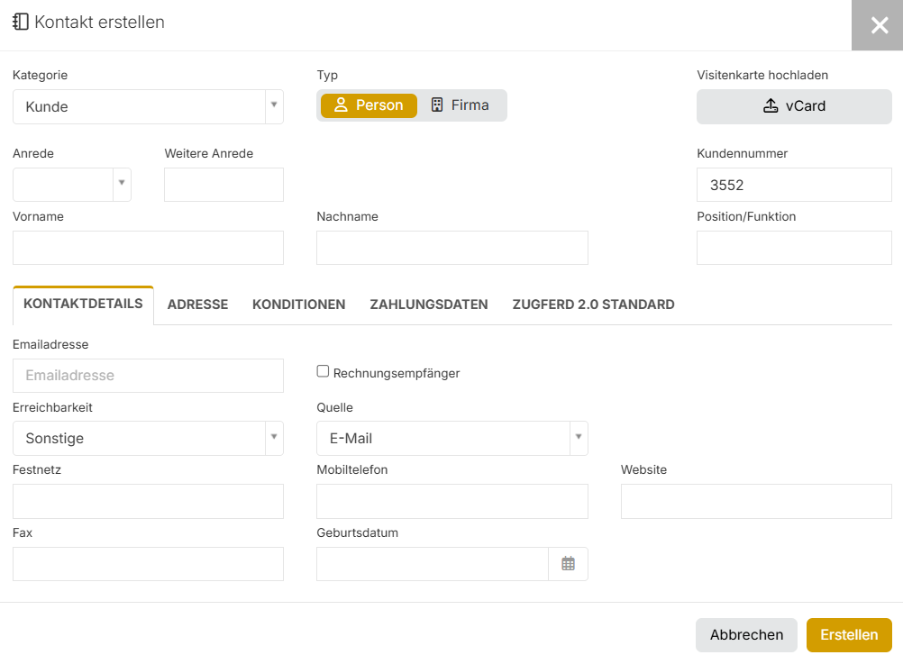
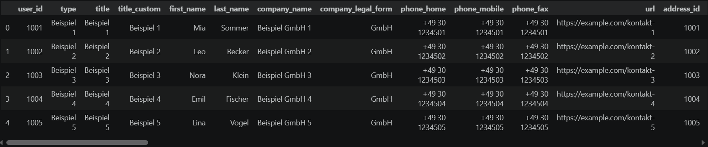

Fallstudie · Datenzugriff
Vom CRM-Formular zur Datengrundlage
Analysen und Automatisierungen brauchen Daten. In meinem Fall mussten diese Daten nicht erst gesammelt werden: Kontakte, Projekte, Termine und Dokumente lagen bereits in unserer CRM-Software HERO. Mitarbeiter hatten sie über Monate und Jahre in einzelne Formulare eingetragen. Ich musste nur einen Weg finden, sie nicht mehr Datensatz für Datensatz anzuklicken, sondern strukturiert abzurufen.
- Python
- GraphQL
- pandas
- requests
- REST-API
- Inkrementeller Sync
Diese Fallstudie zeigt, wie daraus schrittweise eine wiederverwendbare Sync-Bibliothek entstand: von der ersten Frage an die KI über einen kleinen API-Test bis zu einer Aktualisierung, die später nur noch neue und veränderte Daten abruft.
1. Die Daten sind längst da
Mitarbeiter tragen jeden Tag Informationen in Unternehmenssoftware ein: Namen, Adressen, Telefonnummern, Projektstatus, Termine, Rechnungen und Dokumente. Schon ein einzelner Kontakt verteilt sich auf viele getrennte Felder:
- Anrede
- Vorname
- Nachname
- Unternehmen
- E-Mail-Adresse
- Telefonnummer
- Straße
- Postleitzahl
- Ort
Für die tägliche Arbeit ist diese Oberfläche sinnvoll. Ein Mitarbeiter öffnet einen Kontakt, ergänzt eine Telefonnummer und speichert den Datensatz.
Für eine Analyse funktioniert dieser Weg nicht. Niemand möchte mehrere Tausend Kontakte einzeln öffnen, um herauszufinden, in welcher Stadt die meisten Kunden wohnen oder wie viele neue Kontakte in einem bestimmten Monat angelegt wurden. Die benötigten Daten sind also bereits vorhanden. Sie stecken nur hinter Formularen, Menüs und einzelnen Ansichten fest.
Zwei Ansichten derselben Daten

Beide Ansichten zeigen dieselben Informationen. Der Unterschied liegt nur im Zugriff: oben ein Datensatz nach dem anderen — unten Tausende gleichzeitig, filter- und auswertbar.

2. Was eine API hier bedeutet
Die Oberfläche einer Unternehmenssoftware ist für Menschen gebaut. Sie besteht aus Buttons, Formularen, Suchfeldern und Menüs. Eine API ist ein zusätzlicher Zugang für Programme. Statt sich durch die Oberfläche zu klicken, sendet ein Python-Skript eine gezielte Anfrage:
Gib mir die IDs, Namen, E-Mail-Adressen und Änderungszeitpunkte der Kontakte.
Die API liefert daraufhin strukturierte Daten zurück. Diese Antwort ist noch keine
fertige Excel-Tabelle. Sie liegt zunächst meist als JSON vor. Mit
pandas kann Python daraus anschließend einen DataFrame erzeugen.
- CRM-Daten — im Arbeitsalltag eingetragen, hinter der Oberfläche.
- API-Antwort — dieselben Daten strukturiert als JSON.
- Python — liest die Antwort ein.
- Tabelle — ein DataFrame zum Filtern und Auswerten.
Die API erzeugt also keine neuen Daten. Sie macht die Informationen zugänglich, die im Arbeitsalltag bereits eingetragen wurden.
3. Der Einstieg mit KI
Ich kannte am Anfang weder GraphQL noch die API des CRM. Deshalb begann ich nicht mit dem Auftrag „Baue mir eine vollständige Datenpipeline." Eine solche Aufgabe wäre zu groß gewesen. Ich hätte kaum beurteilen können, welcher Teil des erzeugten Codes notwendig ist, wo Fehler liegen und ob die Lösung überhaupt zur tatsächlichen Schnittstelle passt. Stattdessen stellte ich der KI eine kleine, überprüfbare Frage:
„Ich verwende die HERO-Software und möchte über die API einige Kontakte mit
Python abrufen. Zeig mir den kleinsten funktionierenden Test mit
requests und pandas. Erkläre mir anschließend nur die
groben Schritte."
Die KI half mir dabei, aus der Dokumentation eine erste Anfrage zu bauen. Die Dokumentation und die tatsächliche Antwort der API blieben dabei die verbindlichen Quellen. Den API-Schlüssel und echte Kundendaten habe ich nicht in den Chat kopiert. Dafür reichen Platzhalter:
API_SCHLUESSEL = "DEIN_API_SCHLUESSEL"Der erste Auftrag hatte nur ein Ziel: prüfen, ob Python die API erreicht und ob die Antwort die erwarteten Kontaktdaten enthält.
4. Der erste funktionierende Abruf
Die erste Version war bewusst klein. Sie sollte noch keine vollständige Bibliothek sein — sie musste nur beweisen: Der Zugang funktioniert, die API antwortet, die gewünschten Felder kommen an, und Python kann daraus eine Tabelle erzeugen.
import pandas as pd
import requests
from config import API_URL, API_SCHLUESSEL
headers = {
"Authorization": f"Bearer {API_SCHLUESSEL}",
"Accept": "application/json",
"Content-Type": "application/json",
}
query = """
query {
contacts(last: 5) {
id
first_name
last_name
email
modified
}
}
"""
response = requests.post(
API_URL,
headers=headers,
json={"query": query},
timeout=30,
)
response.raise_for_status()
payload = response.json()
if "errors" in payload:
raise RuntimeError(payload["errors"])
contacts_df = pd.json_normalize(
payload["data"]["contacts"]
)
contacts_dfIm Code passieren fünf Schritte.
1 · Zugangsdaten laden
from config import API_URL, API_SCHLUESSELDie API-Adresse und der Schlüssel stehen in einer getrennten Konfigurationsdatei. Dadurch landen sie nicht versehentlich im öffentlichen Quellcode.
2 · Anfrage vorbereiten
query = """
query {
contacts(last: 5) {
...
}
}
"""Die GraphQL-Abfrage legt fest, welche Daten benötigt werden. Für den ersten Test reichen fünf Kontakte und wenige Felder.
3 · Anfrage absenden
requests.post(...)Python sendet die Abfrage an die API.
4 · Fehler sichtbar machen
response.raise_for_status()
if "errors" in payload:
...Beide Prüfungen verhindern, dass ein fehlgeschlagener Abruf unbemerkt als erfolgreich behandelt wird.
5 · Tabelle erzeugen
pd.json_normalize(...)wandelt die strukturierte Antwort in einen DataFrame um. Damit war der erste Schritt abgeschlossen: Die Daten lagen nicht mehr nur hinter der CRM-Oberfläche, sondern als Tabelle in Python vor.
5. Der erste Erfolg war noch keine gute Lösung
Die erste Version funktionierte. Für den täglichen Einsatz war sie trotzdem ungeeignet. Eine einfache Weiterentwicklung wäre gewesen, bei jedem Start sämtliche Kontakte, Projekte, Termine und Dokumente erneut herunterzuladen. Das wäre technisch möglich, aber unnötig:
- Die Ausführung dauert länger.
- Es werden viele unveränderte Daten übertragen.
- Die API wird stärker belastet.
- Große Datenmengen müssen jedes Mal neu verarbeitet werden.
Wenn sich seit dem letzten Lauf nur zwölf Kontakte geändert haben, müssen nicht wieder Tausende vollständige Kontaktdatensätze geladen werden. An dieser Stelle änderte sich die Aufgabe. Die Frage lautete nicht mehr „Wie lade ich alle Daten herunter?", sondern: „Wie erkenne ich zuerst, was sich verändert hat, und lade anschließend nur diese Datensätze vollständig?"
6. Erst prüfen, dann vollständig laden
Die neue Lösung arbeitet in zwei Stufen.
- IDs und Änderungszeiten abrufen — nur zwei kleine Informationen: die eindeutige ID und den Änderungszeitpunkt
modified. - Mit der lokalen CSV vergleichen — welche Werte sind neu, welche haben sich geändert?
- Neue oder veränderte IDs bestimmen — nur diese sind relevant.
- Nur diese Datensätze vollständig laden — der Rest bleibt unangetastet.
- Einfügen oder aktualisieren — je nachdem, ob die ID schon existiert.
Eine ID funktioniert dabei wie eine eindeutige Nummer auf einem Aktenordner. Zwei Kontakte können denselben Namen haben. Ihre IDs dürfen trotzdem nicht identisch sein. Beim Speichern gibt es deshalb zwei Möglichkeiten:
- ID bereits vorhanden → bestehende Zeile aktualisieren.
- ID noch nicht vorhanden → neue Zeile einfügen.
Die Daten werden nicht jedes Mal blind an die CSV-Datei angehängt. Sonst würde derselbe Kontakt nach mehreren Läufen mehrfach vorkommen.
7. Der Sync läuft, bis sich nichts mehr verändert
Während das Skript Daten abruft, arbeiten Mitarbeiter weiter im CRM. Ein Kontakt kann also verändert werden, während der aktuelle Lauf noch nicht abgeschlossen ist. Das ist vergleichbar mit einer Inventur in einem Lager, in dem während des Zählens weiterhin Waren bewegt werden. Nach einem einzigen Rundgang ist nicht automatisch garantiert, dass die Liste vollständig aktuell ist. Deshalb prüft der Sync nach einer Aktualisierung noch einmal:
- Änderungen suchen
- Änderungen laden
- CSV aktualisieren
- Erneut prüfen
Erst wenn ein vollständiger Kontrolllauf keine neuen oder veränderten Datensätze mehr findet, gilt der Sync als stabil. Damit wurde aus einem einmaligen API-Test eine wiederverwendbare Aktualisierungslogik.
8. Aus einer Abfrage wurde eine Bibliothek
Der erste Test beschränkte sich auf Kontakte. Danach habe ich dieselbe Grundidee auf weitere Bereiche des CRM übertragen. Heute stellt die Bibliothek vier zentrale Tabellen bereit: Kontakte, Projekte, Termine und Dokumente. Jede lässt sich einzeln synchronisieren:
kontakte_sync()
projekte_sync()
termine_sync()
dokumente_sync()Die Funktionen liefern zurück, wie viele Datensätze neu eingefügt oder aktualisiert wurden und wie viele Zeilen die Tabelle anschließend enthält. Die Tabellen lassen sich über gemeinsame IDs miteinander verbinden: Ein Projekt enthält eine Kunden- oder Kontakt-ID, ein Termin eine Projekt-ID, ein Dokument kann ebenfalls einem Kontakt oder Projekt zugeordnet sein. Dadurch entsteht aus vier einzelnen Tabellen eine gemeinsame Datengrundlage.
9. Was darauf aufbaut
Die CRM-Sync-Bibliothek ist keine Analyse für sich. Sie liefert die Daten, die andere Projekte benötigen. Der PV-Vertragsgenerator greift auf Kunden- und Projektdaten zurück, die Lead-Automation und die Rechnungs-Pipeline setzen auf denselben Tabellen auf. Weitere Auswertungen können direkt mit den vorhandenen DataFrames beginnen.
Ohne die Bibliothek müsste jedes Folgeprojekt erneut:
- die Verbindung zur API herstellen
- GraphQL-Abfragen definieren
- Pagination behandeln
- Fehler prüfen
- Daten normalisieren
- bestehende CSV-Dateien aktualisieren
Durch die gemeinsame Grundlage muss diese Logik nur einmal gepflegt werden. Der wichtigste Teil des Projekts war deshalb nicht, jede Funktion der API auswendig zu lernen. Entscheidend war der Ablauf:
- Kleines Problem formulieren
- KI gezielt einsetzen
- Erste Version prüfen
- Schwäche erkennen
- Logik verbessern
- Als wiederverwendbare Grundlage speichern
So wurde aus einer unbekannten Schnittstelle Schritt für Schritt das Datenfundament für mehrere weitere Automatisierungen.